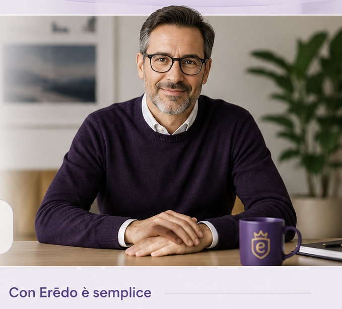

La tua
SUCCESSIONE.
Tutta in un
unico posto.
Avrai un esperto dedicato che si incarica della tua dichiarazione di successione e ti segue dall'inizio alla fine: sai sempre cosa fare, quali documenti servono e a che punto sei.

Partiamo da quello che hai e capiamo cosa serve.
Sempre con te, dall'inizio alla fine.
Hai un unico punto di riferimento e risposte sempre chiare.
Una successione non arriva mai in un momento qualunque…
Per questo non dovresti rincorrere documenti, uffici e risposte proprio quando hai bisogno di sapere con chiarezza cosa fare.
Erēdo nasce per accompagnarti in questo passaggio e raccogliere la tua eredità tutta in un unico posto.
Smetti di saltare da un ufficio all'altro.
Molte successioni si complicano prima ancora di iniziare, quando non si imbocca da subito la strada giusta.
La differenza tra rincorrere tutto e avere finalmente la successione sotto controllo.
Senza Erēdo
- ✕Devi capire da solo cosa fare.
- ✕Documenti e informazioni restano sparsi tra email, telefonate e messaggi.
- ✕Rincorri risposte e persone diverse.
- ✕Salti da un ufficio all'altro.
- ✕Ti chiedi cosa viene dopo.
Con Erēdo
- ✓Sai sempre cosa fare.
- ✓Hai tutto in un unico posto.
- ✓Hai un unico esperto di riferimento.
- ✓Ti accompagniamo noi dall'inizio alla fine.
- ✓Sai sempre a che punto sei.

Sempre con teUn esperto dedicato a te.
Un professionista che conosce la tua situazione e rimane il tuo punto di riferimento dall'inizio alla fine. Prepara la dichiarazione di successione ed è a tua disposizione quando hai bisogno di una risposta.
Mentre noi portiamo avanti la successione, tu puoi vederla.
Con Erēdo hai gratuitamente accesso all'app che ti permette di vedere a che punto è la successione e cosa viene dopo.
La tua successione, sempre sotto controllo.
Dall'inizio alla fine, sai sempre cosa succede.
Partiamo dalla tua situazione
Partiamo da quello che hai. Da lì capiamo insieme cosa serve.
Prendiamo in carico la successione
Raccogliamo ciò che serve e gestiamo i passaggi necessari fino alla conclusione del percorso.
Mettiamo insieme ciò che hai ereditato
Conclusa la successione, hai finalmente davanti il quadro della tua eredità.

Alla fine della successione, inizia la tua eredità.
Durante il percorso abbiamo raccolto informazioni, documenti e ciò che compone la tua eredità. Alla fine te li restituiamo insieme.
La Carta di ErēdoUn documento costruito intorno alla tua eredità per permetterti di ritrovare ciò che hai ricevuto, le informazioni che lo riguardano e il punto da cui partire per le decisioni successive.
Hai davanti ciò che compone la tua eredità.
Ritrovi documenti e informazioni che la riguardano.
Hai un punto di partenza per ciò che vorrai fare dopo.
La dichiarazione di successione serve all'Agenzia delle Entrate. La Carta di Erēdo serve a te.
Facciamo successioni. Per gli eredi.
Quando erediti, non dovresti diventare tu l'esperto di successioni.
Per questo abbiamo costruito Erēdo intorno a te: per aiutarti a capire da dove iniziare, accompagnarti nei passaggi necessari e portarti alla fine della successione sapendo cosa hai ereditato e dove ritrovarlo.
Devi fare una successione? Erēdo è stato costruito per te.
Non sai da dove iniziare.
Hai un'eredità da gestire, ma non sai ancora quali siano i primi passi.
Ci sono più beni, documenti o eredi da mettere insieme.
Vuoi capire cosa serve senza dover ricostruire tutto da solo.
Vuoi affidare la successione a un unico riferimento.
Preferisci che qualcuno la prenda in carico e la porti avanti fino alla conclusione.
Le domande che è normale farsi prima di iniziare.
Chi seguirà concretamente la mia successione?
La tua successione viene presa in carico da un esperto dedicato che conosce il tuo caso e rimane il tuo riferimento durante il percorso.
Cosa devo avere per iniziare?
Non devi arrivare con tutto già pronto. Partiamo dalla tua situazione e ti indichiamo quali informazioni e documenti servono per procedere.
E se mi manca qualche documento?
Verifichiamo insieme ciò che hai già e ciò che manca, così sai cosa deve essere recuperato per proseguire.
Posso fare la successione anche a distanza?
Sì. Erēdo è pensato per permetterti di affrontare la successione senza file agli sportelli, senza dover discutere con funzionari e senza saltare da un ufficio all'altro per cercare risposte o aggiornamenti.
Il tuo esperto gestisce il percorso e tu puoi seguirne l'avanzamento direttamente in Erēdo.
Posso vedere a che punto è la successione?
Sì. Con la successione Erēdo hai accesso gratuitamente all'app, dalla quale puoi seguire lo stato della successione e vedere cosa viene dopo.
Erēdo si occupa anche delle volture?
Sì. Le volture catastali fanno parte del percorso Erēdo e vengono gestite insieme alla dichiarazione di successione.
Quanto tempo richiede una successione?
La dichiarazione di successione deve essere presentata entro 12 mesi dall'apertura della successione, che normalmente coincide con la data del decesso.
Con Erēdo non aspettiamo l'ultimo momento: lavoriamo per completare il percorso nel minor tempo possibile, compatibilmente con la tua situazione, i documenti disponibili e i tempi degli eventuali soggetti esterni coinvolti.
Quanto costa fare la successione con Erēdo?
Il prezzo Erēdo è definito prima di iniziare e resta fisso fino alla conclusione.
Sai da subito quanto spenderai, senza costi che compaiono strada facendo.
Prezzo fisso. Nessuna sorpresa.E se manca una successione precedente?
Se per poter procedere è necessario completare prima una successione precedente o un altro passaggio autonomo, te lo diciamo prima.
Ti spieghiamo cosa serve e quale costo aggiuntivo comporta quel passaggio.
A quel punto decidi tu se integrarlo e proseguire con Erēdo oppure fermarti.
Il prezzo della successione Erēdo concordato non cambia.
Cosa ricevo alla fine?
Solo chi affida la propria successione a Erēdo riceve, alla fine del percorso, la Carta di Erēdo.
Non è una copia della dichiarazione di successione.
È il documento costruito per te, che raccoglie e organizza ciò che hai ereditato, le informazioni che lo riguardano e il punto da cui partire per le decisioni successive.
Sai cosa hai. Sai dove trovarlo. Sai cosa fare.La dichiarazione di successione serve all'Agenzia delle Entrate. La Carta di Erēdo serve a te.
Non sai da dove iniziare? Partiamo da lì.
Scopri come può iniziare la tua successione, in base alla tua situazione.